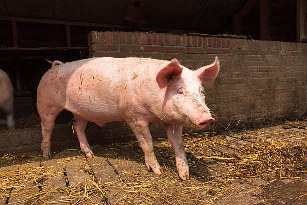

🌈 Aluno do SENAI de Chapecó inicia nova fase e revela ser gay
Chapecó (SC) — O estudante Cleverton S., do SENAI de Chapecó, passou por um período de reflexão após uma desilusão amorosa. Durante esse processo, descobriu sua atração por pessoas do mesmo gênero e iniciou uma fase de autoconhecimento. Colegas e professores relatam que Cleverton está recebendo apoio da escola e incentivo para se sentir seguro. A direção do SENAI reforçou a importância de respeito à diversidade e acolhimento. “Cada aluno tem o direito de viver sua identidade plenamente”, afirmou a coordenação da instituição.

🐖 SENAI de Chapecó lança campanha de doação de porcos do xiqueiro da escola
Chapecó (SC) — O SENAI de Chapecó iniciou um movimento inusitado: a campanha de doação de porcos que vivem nos xiqueiros da escola. Segundo a direção, a ideia é dar novos lares para os animais, que já são muitos e precisam de cuidados adequados. Professores e alunos participaram da ação, divulgando fotos e informações para interessados em adotar os porcos de forma responsável. A iniciativa busca ensinar aos estudantes sobre responsabilidade com animais e sustentabilidade, além de integrar a comunidade local. “Queremos que esses porcos encontrem famílias que possam cuidar deles. É um projeto educativo e divertido ao mesmo tempo”, disse um dos coordenadores do SENAI.
